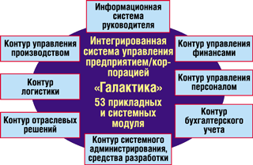
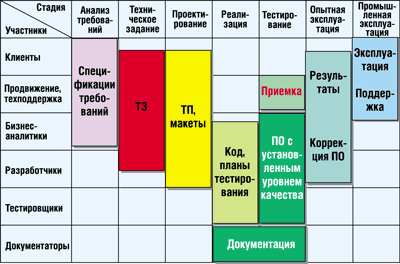
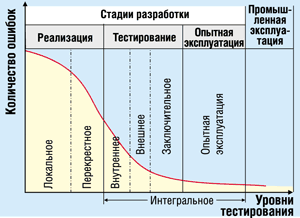
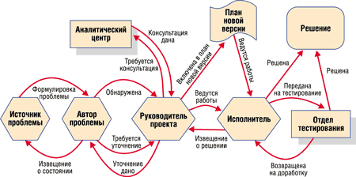
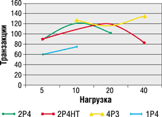

Андрей Колесов
По мере увеличения сложности программных средств и их роли в обеспечении жизнедеятельности предприятий резко возрастают и требования к качеству ПО (надежности, устойчивости, компактности, производительности, масштабируемости и т. п.). С точки зрения повышения качества очень важны все этапы разработки ПО - проектирование, кодирование, тестирование и отладка. И все же можно без преувеличения сказать, что тестирование программных продуктов имеет здесь особое значение, на него приходится почти половина стоимости проекта.
В качестве примера достаточно взять широко известную практику Microsoft. Мы видим, что бета-тестирование продуктов корпорации сейчас занимает от года (офисные приложения) до двух лет (серверные системы), при этом наблюдается явная тенденция к увеличению этих сроков. А ведь перед "внешним" тестированием есть еще и этап "внутреннего" альфа-тестирования. Стоит обратить внимание и еще на один любопытный факт: недостатка в энтузиастах, желающих поучаствовать в бета-тестировании, не наблюдается, однако Microsoft придерживается принципа "лучше меньше (тестировщиков), да лучше". Кроме того, еще четыре года назад корпорация стала в обязательном порядке использовать бета-версии (обычно начиная со второй) своих продуктов в реальной работе собственных подразделений. При этом, конечно же, появляются возможные издержки в виде проблем с работоспособностью продуктов, но они с лихвой компенсируются - управление тестированием существенно упрощается. Не забудем и о маркетинговых выгодах такой схемы: кто усомнится в качестве товара, который производитель испытал на себе!
Но Microsoft работает на массовом рынке и поставляет не комплексные системы, а отдельные продукты. Пользователь в любом случае может не спешить с их внедрением и посмотреть, сколько шишек набьют себе те, кто уже работает с новинками (а в силу массовости рынка желающих всегда будет много). Он может и сам протестировать пробную версию, причем без ущерба для нормальной работы информационной системы предприятия. В случае же комплексных систем управления предприятием, скажем, ERP-решений, такой подход не всегда возможен, и это накладывает особые требования к оценке качества ПО.
В этой статье мы рассмотрим технологию тестирования и оценки качества программных продуктов корпорации "Галактика" (http://www.galaktika.ru) - на наш взгляд, она хорошо отражает современные методы решения подобных задач, и поэтому может заинтересовать не только клиентов этой компании, но и широкий круг ИТ-специалистов.
Общие принципы разработки
"Галактика" - интегрированная система для управления предприятием, это тиражно-заказной продукт, включающий 7 функциональных контуров, 53 прикладных и системных модуля (рис. 1).
|  |
| Рис. 1. Функциональная схема системы "Галактика".
|
Основы надежности и производительности закладываются организацией производства. Корпорация "Галактика" следует версионному принципу развития своей системы. Как правило, каждая версия реализует определенную концепцию функционального развития. Цикл разработки (рис. 2) начинается с анализа требований рынка с целью выявления конкурентных задач, далее идут проектирование и реализация (6-12 месяцев), затем проверка проектных решений и тестирование. После приемки в опытную эксплуатацию, как правило, организуется выполнение пилотных проектов (при участии и под авторским надзором разработчиков), позволяющих оценить соответствие требованиям клиентов и разработать технологии внедрения нового функционала. По ходу пилотных проектов возможно проведение функциональных доработок.
|  |
| Рис. 2. Корпоративный стандарт "Разработка программных продуктов. Стадии и этапы".
|
При достижении успеха не менее чем в пяти пилотных проектах функциональное развитие версии в соответствии с данной концепцией считается в целом завершенным. После этого окончательно формируются (и передаются партнерам) технологии продвижения, внедрения и сопровождения версии, а также обучения пользователей - все это составные части нового продукта, который корпорация предлагает своим клиентам.
Далее развитие и модификация версии системы ведется по двум направлениям - в рамках сопровождения по договорам абонентского обслуживания (устранение проблем, поддержка законодательства) и в рамках заказных разработок. В последнем случае клиент заключает договор на модификацию системы или разработку нового модуля. Иногда эти специализированные модули становятся затем основой для типовых блоков. Таким образом, например, появились первые версии модулей "Управление бюджетом" и "Управление капитальным строительством".
Каждая из стадий цикла разработки предусматривает свой комплекс методов и процедур, которые образуют систему управления качеством. Мы подробнее остановимся на тестировании и постараемся осветить опыт и некоторые технологические "изюминки" корпорации "Галактика".
Комплексная система тестирования
Хотя основы качества закладываются еще при анализе требований, разработке и экспертизе проектной документации, тестирование остается одной из ключевых стадий общего цикла разработки ПО, определяющей характеристики продукта. При тестировании используется несколько способов проверки ПО.
Блочное, или локальное тестирование (unit testing) - проверка, охватывающая небольшой фрагмент кода вне его связи с другими подобными фрагментами. Обычно проводится до интеграции решения (блока) в систему.
Функциональное тестирование (functional testing) - сопоставление выходных данных, полученных в ходе тестирования, с заданными в функциональных требованиях.
Тестирование "черного ящика" (black box testing) проводится безотносительно к структуре программы (на окончательной форме ее реализации). Случаи, когда дополнительно проводится проверка внутренней логики (на уровне кода), относятся к тестированию "белого ящика" (white box testing).
В практике корпорации "Галактика" локальное тестирование и тестирование "белого ящика" проводятся в подразделениях разработки, по ходу работ. Тестирование "черного ящика" часто предполагает перебор большого числа вариантов, что весьма трудоемко и не имеет особого смысла, поскольку далеко не все варианты бывают востребованы. Поэтому чаще используется более направленное функциональное тестирование - по проектной документации или по описанным бизнес-процессам (контрольным примерам) заказчиков.
Интеграционное, или интегральное тестирование (integration testing) - проверка программного продукта в целом, после полной его сборки. Здесь выявляются ошибки, возникающие в процессе интеграции программных компонентов или модулей, в том числе дефекты, нарушающие их взаимодействие.
Стрессовое тестирование (stress testing) - тестирование продукта при номинальных или максимальных нагрузках. Цель этой операции - убедиться, что функциональность не "ломается", когда с системой работает большое число пользователей, что в принципе может приводить к различным конфликтам.
Регрессионное тестирование (regression testing) - тестирование, проводимое после функционального усовершенствования или после исправления программы. Здесь ставятся две задачи: а) убедиться, что обнаруженная ошибка исправлена и после этого не появились новые; б) гарантировать функциональную преемственность и совместимость новой версии (релиза, патча) с предыдущими. Как правило, эта стадия включает повторное выполнение всех ранее использованных процедур тестирования.
Нагрузочное тестирование, или тестирование производительности (performance/load testing) - тестирование продукта при заданных известных нагрузках, которые определяются в терминах числа пользователей, объема данных и скорости их обработки (времени отклика). Проводится отдельно от функционального тестирования, на специальном оборудовании (стенде).
Тестирование ПО на различных стадиях разработки ставит целью достижение заданных контрольных показателей - как натуральных (количество ошибок), так и качественных (критичность ошибки).
Для оценки процесса тестирования используются статические и динамические показатели. Статические определяются списком ошибок, ранжированным по уровням критичности (степени влияния на выполнение бизнес-процессов) - как в целом по версии, так и в разрезе функциональных частей. Для сравнения версий и различных частей продукта применяется удельный показатель - количество на тысячу строк кода.
Динамические показатели учитывают интенсивность обнаружения ошибок (количество/период), в том числе удельную (на одного участника тестирования). Контроль показателей проводится с помощью системы ПИР ("Проблемы и решения") путем формирования отчетов в табличной и графической форме.
Фактически тестирование начинается еще во время кодирования очередной версии. Локальное тестирование новых или измененных функций системы - это одна из задач разработчиков. Значительная часть ошибок выявляется и устраняется практически в момент возникновения. При определенной готовности системы начинается перекрестное тестирование. Разработчики не только "свежим взглядом" проверяют работу друг друга, но и одновременно обмениваются накопленным опытом. Эти виды тестирования обычно дополняются визуальной проверкой исходного кода, что позволяет "выловить" ошибки, которые могут не сразу проявиться при обычном тестировании.
Далее начинается тестирование системы как единого целого (интегральное тестирование), которое состоит из нескольких этапов.
Внутреннее тестирование выполняется силами Управления разработки ПО (отделы тестирования, аналитические отделы), а также привлекаемых специалистов служб продвижения. Основные задачи этой операции - проверка проектных решений на соответствие проектной документации, функциональная полнота системы, соответствие законодательству России, Белоруссии, Украины и Казахстана.
Следующий этап - внешнее тестирование. В нем участвуют ресурсы, "внешние" по отношению к Управлению разработки ПО, например, подразделения, занимающиеся продажей, пуском и наладкой, технической поддержкой и обучением, клиенты, которые заказали новые функции системы и хотят их проверить на своих бизнес-процессах, а также другие заинтересованные организации.
Понятие "внешнее тестирование" - более широкое, чем традиционное "бета-тестирование", в котором участвуют только нынешние и потенциальные потребители. Здесь концентрируются усилия сотен опытных экспертов, использующих различные методологии и имеющих разный опыт использования системы, обширные знания бизнес-процессов клиентов. С помощью корпоративной системы "Проблемы и решения" эксперты объединяются в единую команду, действия которой координирует отдел интегрального тестирования.
Задача данного этапа - обеспечение надежности, выявление и устранение максимального количества ошибок. Одновременно отдел интегрального тестирования по специальным методикам выполняет тестирование производительности по определенному набору критичных функций, стрессовое тестирование и параллельное тестирование на разных платформах.
Заключительное тестирование проводят отделы тестирования Управления разработки ПО. Его цель - еще раз проверить реализацию как можно большего количества бизнес-процессов и убедиться, что исправление ошибок на предшествующих этапах не вызвало новых ошибок (регрессионное тестирование). Одновременно идет пополнение библиотеки автоматизированных тестов для последующего сопровождения версии. Проверяется корректность формирования дистрибутивов и инсталляции.
На всех этапах интегрального тестирования постоянно проводится статистический анализ обнаруженных и исправленных ошибок, динамики их регистрации, в результате принимается решение о переходе к следующему этапу. Отработанная система классификации и ранжирования ошибок обеспечивает обоснованность и объективность оценок.
После заключительного тестирования версия поступает на корпоративную приемку. Проверяется программный продукт, готовый к поставке пользователю. Группа контроля качества тщательно проверяет его комплектность и работоспособность, и только после положительного заключения версия получает "путевку в жизнь".
Далее ПО передается в опытную эксплуатацию на предприятия, которые готовы его принять. Это необходимый этап, ибо даже самое полное тестирование не позволяет выявить все нюансы, которые обнаруживаются в ходе реальной эксплуатации. По достижении положительных результатов принимается решение о переходе к промышленной (коммерческой) эксплуатации.
По данным Управления разработкой ПО "Галактики", в процессе разработки очередной версии продукта трудоемкость на стадии разработки распределяется так (с точностью до 5%): на проектирование (анализ требований плюс ТЗ плюс технические проекты) приходится 40%, на реализацию (кодирование) - 20%, на тестирование (все виды ) - 40%. Соответственно относительная трудоемкость этапов тестирования распределяется так: локальное и перекрестное тестирование - 25%; внутреннее тестирование - 25%; внешнее тестирование - 45%; заключительное тестирование - 5%.
Что касается динамики тестирования (рис. 3), то в первые недели тестирования регистрируется в среднем 40-50 ошибок в день, из них до 4 относятся к высшему уровню критичности. В последние недели внешнего тестирования ежедневно регистрировалось не более одной-двух ошибок низшего уровня критичности; при этом ошибок высшего уровня критичности в течение установленного срока не было обнаружено - при максимальной интенсивности тестирования поток регистрации ошибок, затрудняющих выполнение бизнес-процессов, устойчиво сходит на нет. Чтобы достичь такого уровня и перейти к заключительному тестированию, проверяется примерно 40?50 сборок версии, в которых исправляются ошибки. Требования к организации тестирования и выполнению отдельных видов работ зафиксированы в соответствующих корпоративных регламентах и технологических инструкциях.
|  | Рис. 3. Динамика тестирования.
|
Контроль производительности и нагрузочное автоматизированное тестирование
В "Галактике" наработан опыт нагрузочного тестирования, под которым подразумевают эмуляцию эксплуатации системы в многопользовательском режиме. Разработаны нормативы производительности системы на типовых бизнес-процессах заказчиков, при модификации системы проводятся регламентные контрольные измерения для проверки соответствия нормативам и сохранения производительности по сравнению с предыдущей версией (релизом). Аппаратные средства и методика измерений стандартизованы.
Важность данного вида тестирования определяется не только тем, что система "Галактика" изначально построена как многопользовательская, но и тем, что она может работать с различными популярными СУБД - Oracle, Microsoft SQL Server и Pervasive SQL. Результаты нагрузочного тестирования позволяют разрабатывать рекомендации для заказчиков при переходе от одной СУБД к другой.
В ходе нагрузочного тестирования постоянно используются автоматизированные тесты. В свое время перед разработчиками корпорации встали два очевидных вопроса. Во-первых, следует ли использовать средство собственной разработки или лучше применить продукт стороннего разработчика (если так, то какой именно)? Во-вторых, какие задачи можно реально решать с помощью выбранного средства?
При решении первого вопроса специалистам "Галактики" пришлось учитывать целый ряд обстоятельств: совместимость средства тестирования с тестируемой системой во всем наборе используемых платформ; достаточность предлагаемой функциональности и возможность ее расширения; оперативность исправления ошибок, которые могут содержаться в этом средстве, как в любом другом программном продукте; качество документации и технической поддержки; необходимость обучения персонала; ценовую политику поставщика, возможность и условия передачи продукта третьей стороне и т. д.
Каждый разработчик решает эту проблему по-своему. В корпорации "Галактика" используется система собственной разработки AQA (Automated Quality Assurance) - встраиваемый компонент системы "Галактика". Такое решение обеспечивает ряд преимуществ. Не требуется дополнительных программ и ресурсов для установки и использования, обеспечивается работа на всех поддерживаемых платформах и хранение всей информации в единой базе данных. Пользовательский интерфейс AQA не отличается от интерфейса системы "Галактика", что обеспечивает быстрое освоение и простоту использования. Организации-клиенты более эффективно участвуют в тестировании, причем могут не только пользоваться готовыми планами тестов, но и создавать собственные. Исходные данные и действия пользователей, приведшие к критической ситуации при эксплуатации системы, могут фиксироваться и анализироваться специалистами для выяснения причин и устранения последствий.
Основные функциональные характеристики AQA соответствуют требованиям к современным средствам автоматизированного тестирования. Система обеспечивает:
- запись и воспроизведение всех действий пользователя при взаимодействии с приложением;
- запись и восстановление общего контекста, в котором выполняется тест, включая базу данных и все виды настроек;
- формирование скриптов тестов на языке высокого уровня, с возможностью последующего редактирования пользователем;
- возможность ввода контрольных точек для сравнения результатов работы программы, зафиксированных при формировании теста и при очередном прогоне;
- возможность пакетного прогона ранее сформированных тестов или их структурных частей (сегментов) по специально сформированному плану - такие планы могут использоваться для комплексного тестирования;
- регистрацию времени выполнения тестов для определения быстродействия системы;
- автоматическую генерацию отчетов о прохождении тестов;
- архивирование тестов и всей сопутствующей информации, необходимой для их выполнения.
Ответ на второй вопрос выглядит так - с помощью AQA, помимо нагрузочного тестирования, успешно решаются перечисленные ниже задачи.
Параллельное тестирование системы на разных платформах. Отлаженные планы тестирования могут запускаться на любой из поддерживаемых аппаратно-программных платформ, что избавляет от необходимости многократно проделывать один и тот же колоссальный объем работы. При этом легко выявляются ошибки, специфические для конкретной платформы.
Регрессионное тестирование и стабилизация надежности. Специалисты указывают, что каждое исправление ошибки может с вероятностью до 50% породить новую ошибку. Самые трудноуловимые ошибки - те, что появляются в уже многократно проверенных компонентах. Автоматизированное тестирование после модификации кода позволяет обнаружить эти ошибки там, где испытатель с большой вероятностью мог бы их пропустить. Таким образом, надежность уже отлаженных и проверенных компонентов системы находится под постоянным контролем и не ухудшается при изменении других компонентов.
Эта возможность особенно важна при выпуске релизов. Никакая команда испытателей не может вручную пройти хотя бы типовые бизнес-процессы и гарантировать полное сохранение работоспособности, поэтому основной объем проверки функциональности возлагается на систему AQA. Новые и модифицированные функции можно проверить только вручную, однако при этом ведется запись сценариев для их автоматизированного тестирования в дальнейшем.
Кроме того, AQA успешно используется для контроля полноты сборки, для стрессового тестирования, при локальном тестировании разработчиками, а также при пусконаладочных работах на площадке заказчика. Во всех случаях достигается значительная экономия ресурсов и повышается качество тестирования, так как система тестирует программный продукт, не требуя участия человека и ничего не пропуская.
"Проблемы и решения"
В 1995 г. в "Галактике" была создана распределенная система регистрации проблем "Проблемы и решения" (ПИР), ориентированная на задачи организации взаимодействия и обеспечения качества в ходе разработки и сопровождения всех программных продуктов (рис. 4).
|  |
| Рис. 4. Схема обработки проблем в ПИР.
|
Этот продукт класса bug-tracking system - один из ключевых элементов корпоративной технологии разработки и системы управления качеством. С его помощью выполняются следующие основные операции:
- регистрация и классификация проблем, возникших при разработке и эксплуатации программных продуктов;
- отслеживание всех стадий жизненного цикла проблем от регистрации до решения, контроль за соблюдением регламента обработки;
- учет предложений и формирование на их основе планов разработки новых версий;
- автоматизированное формирование сведений о новых свойствах ПО и оперативное информирование о них клиентов;
- формирование статистических отчетов по контрольным показателям для оценки состояния всех продуктов корпорации (разрабатываемых и сопровождаемых).
Традиционно с помощью ПИР проводилась отработка новых технических и технологических решений, причем интенсивная эксплуатация системы несколькими сотнями сотрудников представляет собой эффективный вариант бета-тестирования. В настоящее время система используется во всех восьми основных офисах корпорации. Механизм репликации данных (интервалы от 1 до 2 ч) гарантирует, что проблема, зарегистрированная утром в Иркутске, может к обеду уже быть обработана в Минске, а к вечеру проверенное решение в виде файла с исправлением будет отправлено по назначению.
В ходе решения проблемы взаимодействуют автор, ответственный разработчик и тестировщик, зачастую находящиеся в разных городах. При необходимости для уточнения сложных вопросов можно подключить другие службы, например, аналитические подразделения. Встроенные средства контроля регламента не дадут забыть о проблеме - при нарушении установленных сроков (например, для ответа на вопрос - до двух дней), виновнику, а также его руководителю будет послано соответствующее уведомление.
С прошлого года "Галактика" успешно использует новый вариант системы - Web-ПИР, разработанный в ходе выполнения проекта "Галантис" (создание продукта нового поколения на базе архитектуры .NET). Он не требует развертывания на каждой площадке: система, установленная в Москве, доступна через Интернет в любой точке СНГ. В частности, эту возможность первыми оценили сотрудники подразделений, ведущих пусконаладочные работы на объектах клиентов.
Тестирование в техническом центре Intel
Сегодня одно из основных направлений работы над системой - завершение разработки версии 8.0 системы "Галактика" (параллельно с уже упомянутым продуктом "Галантис"). Его основная особенность - развитие в первую очередь общесистемных (нефункциональных) свойств продукта, в частности, полная реализация трехуровневой архитектуры, завершение перехода к объектным технологиям, реализация компонентной модели с поддержкой независимой разработки и сопровождения компонентов, реализация тонкого клиента.
Новые архитектурные решения потребовали новых, более совершенных методик тестирования. В начале 2003 г. основные элементы "Галактики" 8.0 были протестированы на стендах московского центра службы решений. Основной целью исследования был анализ работы ERP-системы на многопроцессорных конфигурациях, а также на новейших процессорах Intel с использованием технологии параллельных вычислений Hyper-Threading. Результаты тестирования приведены на рис. 5 (1P4 - однопроцессорный сервер приложений на Pentium 4 2,2 ГГц; 2P4 - двухпроцессорный сервер приложений на Pentium 4 2,2 ГГц; 2P4HT - двухпроцессорный сервер на Pentium 4 2.2 ГГц с технологией Hyper-Threading; 4P3 - четырехпроцессорный сервер на Pentium III 700 МГц; сервер БД во всех случаях один и тот же, его максимальная загрузка не превышала 15%).
|  | Рис. 5. Результаты тестирования системы "Галактика" 8.0 в техническом центре Intel.
|
По результатам тестирования был получен главный качественный вывод - в основу новой архитектуры заложены правильные проектные решения, которые позволят клиентам в полной мере использовать преимущества современных вычислительных средств.
Кроме того, внимание заказчиков обращается на следующие факты: во-первых, многопроцессорная техника дает преимущества в производительности (при равной тактовой частоте). Во-вторых, технология Hyper-Threading увеличивает производительность системы примерно на 15%.
Проектирование, кодирование, тестирование, отладка…Скорее всего, историю современных промышленных технологий разработки ПО следует отсчитывать со второй половины 60-х годов прошлого столетия. Необходимость в создании (и научном обосновании!) таких технологий была вызвана резким повышением сложности программных систем, и переломным моментом здесь стал грандиозный проект IBM OS/360, стартовавший в начале 1960-х. Именно тогда были выделены основные этапы разработки: проектирование - кодирование - тестирование - отладка (правда, за ними еще следует сопровождение, модификация...). Тогда же была дана примерная оценка их трудоемкости: 25% - 25% - 25% - 25%. С тех пор прошло почти 40 лет, сложность проектов неимоверно выросла, как и качество инструментария, но в целом соотношение трудозатрат осталось примерно на том же уровне (нужно иметь в виду, что трудоемкость и сроки этапов - это не всегда равнозначные величины). В этой связи стоит вспомнить, что формулировка и обоснование идеологии структурного программирования, которая лежит в основе и сегодняшних методов разработки (в том числе объектно-ориентированного), была вызвана необходимостью снижения затрат - в первую очередь на тестирование ПО. Именно под этим углом зрения рассматривал проблему главный теоретик структурного программирования Э. Дейкстра ("Заметки по структурному программированию", 1972), который показал, что при росте сложности проектов рост затрат на тестирование без соответствующих методик будет существенно опережать трудоемкость проектирования и кодирования. Уже в те далекие времена появилась специализация среди разработчиков ПО (проектировщик, кодировщик, тестер), и все же довольно часто один человек выступал одновременно во всех амплуа. Прогресс технологий неизменно ведет к повышению уровня разделения труда, и сегодня на каждом этапе работают отдельные группы профессионалов. Но, согласно диалектическому закону развития по спирали, сегодня все актуальнее становится подход к разработке как к единому взаимосвязанному процессу. Это легко увидеть на примере роста интереса к системам ALM (Application Lifecycle Management - управление жизненным циклом приложений). Ситуация тут представляется вполне естественной. Нужно проектировать системы, имея в виду не только получение решения с заданными параметрами, но и снижение издержек на его тестирование, отладку и сопровождение. Кодировать нужно так, чтобы не просто получить работоспособную программу, но и предусмотреть возможности ее модернизации. Невозможно построить оптимальную схему тестирования приложения без знания его архитектуры и заложенных в него алгоритмов (не говоря уже о случаях, когда работоспособность программы невозможно оценить путем сравнения с заранее известными результатами). Проблемы, обнаруженные в ходе тестирования и отладки, могут стать основанием для перепроектирования или даже для коррекции технического задания. Хотелось бы обратить внимание на нюансы в определении понятий "отладка" и "тестирование". В широком смысле отладка означает процесс доведения написанного приложения до работоспособного состояния (соответствия сформулированным ранее техническим требованиям) - упрощенно говоря, устранение ошибок. Однако в этой работе есть два качественно разных вида деятельности: обнаружение ошибки (тестирование) и поиск причины ошибки и ее устранение (отладка в узком смысле слова). Первую задачу может выполнять тестировщик, вторую - только разработчик. Как видим, круг опять замкнулся. В заключение вспомним вывод, впервые сформулированный профессором Дейкстрой более 30 лет назад: "Тестирование программ может послужить доказательством наличия ошибок, но никогда не докажет их отсутствия". Отсюда вытекает и другая максима: "Каждая последняя найденная в программе ошибка на самом деле предпоследняя". |